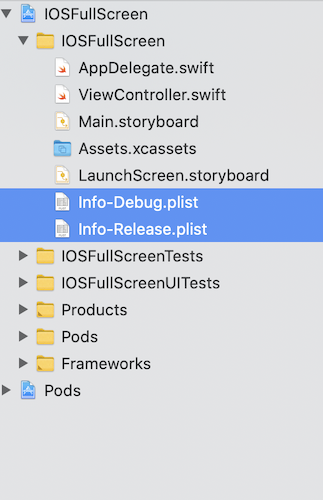
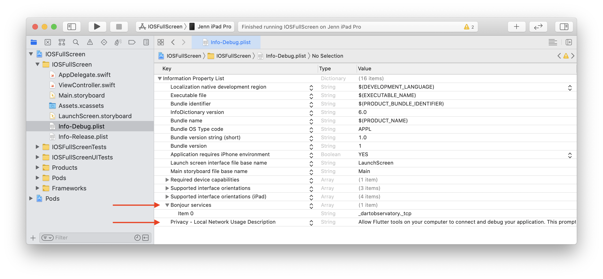
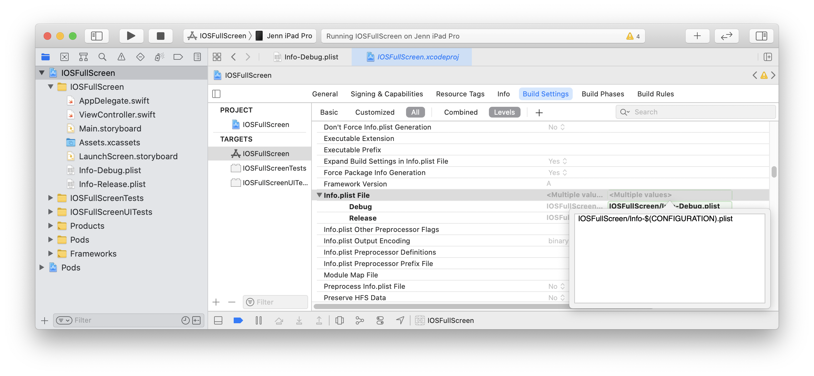
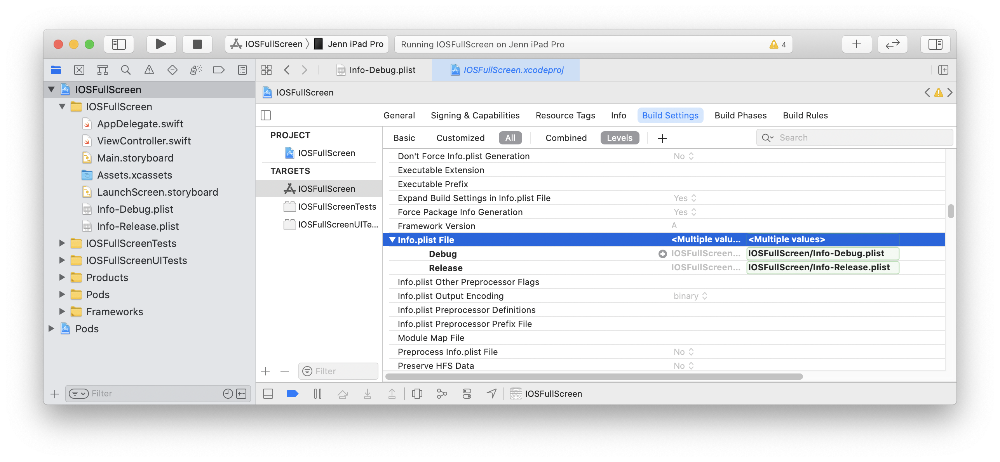
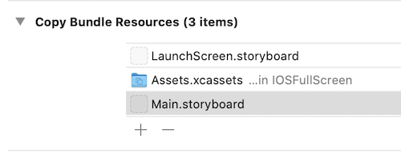
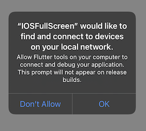

Integrate a Flutter module into your iOS project
Flutter UI components can be incrementally added into your existing iOS application as embedded frameworks. There are a few ways to embed Flutter in your existing application.
-
Use the CocoaPods dependency manager and installed Flutter SDK. In this case, the
flutter_moduleis compiled from the source each time the app is built. (Recommended.) -
Create frameworks for the Flutter engine, your compiled Dart code, and all Flutter plugins. Here, you manually embed the frameworks, and update your existing application’s build settings in Xcode. This can be useful for teams that don’t want to require every developer to have the Flutter SDK and Cocoapods installed locally.
-
Create frameworks for your compiled Dart code, and all Flutter plugins. Use CocoaPods for the Flutter engine. With this option, embed the frameworks for your application and the plugins in Xcode, but distribute the Flutter engine as a CocoaPods podspec. This is similar to the second option, but it provides an alternative to distributing the large Flutter.xcframework.
For examples using an app built with UIKit, see the iOS directories in the add_to_app code samples. For an example using SwiftUI, see the iOS directory in News Feed App.
System requirements
Your development environment must meet the macOS system requirements for Flutter with Xcode installed. Flutter supports iOS 12 and later. Additionally, you will need CocoaPods version 1.10 or later.
Create a Flutter module
To embed Flutter into your existing application, using any of the methods mentioned above, first create a Flutter module.
From the command line, run:
cd some/path/
flutter create --template module my_flutter
A Flutter module project is created at some/path/my_flutter/.
If you are using the first method mentioned above,
the module should be created in the same parent directory
as your existing iOS app.
From the Flutter module directory, you can run the same flutter
commands you would in any other Flutter project,
like flutter run --debug or flutter build ios.
You can also run the module in
Android Studio/IntelliJ or VS Code with
the Flutter and Dart plugins. This project contains a
single-view example version of your module before it’s
embedded in your existing application,
which is useful for incrementally
testing the Flutter-only parts of your code.
Module organization
The my_flutter module directory structure is similar to a
normal Flutter application:
my_flutter/
├── .ios/
│ ├── Runner.xcworkspace
│ └── Flutter/podhelper.rb
├── lib/
│ └── main.dart
├── test/
└── pubspec.yaml
Add your Dart code to the lib/ directory.
Add Flutter dependencies to my_flutter/pubspec.yaml,
including Flutter packages and plugins.
The .ios/ hidden subfolder contains an Xcode workspace where
you can run a standalone version of your module.
It is a wrapper project to bootstrap your Flutter code,
and contains helper scripts to facilitate building frameworks or
embedding the module into your existing application with CocoaPods.
Embed the Flutter module in your existing application
After you have developed your Flutter module, you can embed it using the methods described at the top of the page.
Using Flutter increases your app size.
Option A - Embed with CocoaPods and the Flutter SDK
This method requires every developer working on your project to have a locally installed version of the Flutter SDK. The Flutter module is compiled from source each time the app is built. Simply build your application in Xcode to automatically run the script to embed your Dart and plugin code. This allows rapid iteration with the most up-to-date version of your Flutter module without running additional commands outside of Xcode.
The following example assumes that your existing application and the Flutter module are in sibling directories. If you have a different directory structure, you might need to adjust the relative paths.
some/path/
├── my_flutter/
│ └── .ios/
│ └── Flutter/
│ └── podhelper.rb
└── MyApp/
└── Podfile
If your existing application (MyApp) doesn’t
already have a Podfile, run pod init in the
MyApp directory to create one.
You can find more details on using
CocoaPods in the CocoaPods getting started guide.
-
Add the following lines to your
Podfile:MyApp/Podfileflutter_application_path = '../my_flutter' load File.join(flutter_application_path, '.ios', 'Flutter', 'podhelper.rb') -
For each Podfile target that needs to embed Flutter, call
install_all_flutter_pods(flutter_application_path).MyApp/Podfiletarget 'MyApp' do install_all_flutter_pods(flutter_application_path) end -
In the
Podfile’spost_installblock, callflutter_post_install(installer).MyApp/Podfilepost_install do |installer| flutter_post_install(installer) if defined?(flutter_post_install) end -
Run
pod install.
The podhelper.rb script embeds your plugins,
Flutter.framework, and App.framework into your project.
Your app’s Debug and Release build configurations embed the Debug or Release build modes of Flutter, respectively. Add a Profile build configuration to your app to test in profile mode.
Open MyApp.xcworkspace in Xcode.
You can now build the project using ⌘B.
Option B - Embed frameworks in Xcode
Alternatively, you can generate the necessary frameworks
and embed them in your application by manually editing
your existing Xcode project. You might do this if members of your
team can’t locally install Flutter SDK and CocoaPods,
or if you don’t want to use CocoaPods
as a dependency manager in your existing applications.
You must run flutter build ios-framework
every time you make code changes in your Flutter module.
The following example assumes that you want to generate the
frameworks to some/path/MyApp/Flutter/.
flutter build ios-framework --output=some/path/MyApp/Flutter/
some/path/MyApp/
└── Flutter/
├── Debug/
│ ├── Flutter.xcframework
│ ├── App.xcframework
│ ├── FlutterPluginRegistrant.xcframework (only if you have plugins with iOS platform code)
│ └── example_plugin.xcframework (each plugin is a separate framework)
├── Profile/
│ ├── Flutter.xcframework
│ ├── App.xcframework
│ ├── FlutterPluginRegistrant.xcframework
│ └── example_plugin.xcframework
└── Release/
├── Flutter.xcframework
├── App.xcframework
├── FlutterPluginRegistrant.xcframework
└── example_plugin.xcframework
Link and embed the generated frameworks into your existing application in Xcode. There are multiple ways to do this—use the method that is best for your project.
Link on the frameworks
For example, you can drag the frameworks from
some/path/MyApp/Flutter/Release/ in Finder
into your target’s Build
Settings > Build Phases > Link Binary With Libraries.
In the target’s build settings, add $(PROJECT_DIR)/Flutter/Release/
to the Framework Search Paths (FRAMEWORK_SEARCH_PATHS).
Embed the frameworks
The generated dynamic frameworks must be embedded into your app to be loaded at runtime.
After linking the frameworks, you should see them in the Frameworks, Libraries, and Embedded Content section of your target’s General settings. To embed the dynamic frameworks select Embed & Sign.
They will then appear under Embed Frameworks within Build Phases as follows:
You should now be able to build the project in Xcode using ⌘B.
Option C - Embed application and plugin frameworks in Xcode and Flutter framework with CocoaPods
Alternatively, instead of distributing the large Flutter.xcframework
to other developers, machines, or continuous integration systems,
you can instead generate Flutter as CocoaPods podspec by adding
the flag --cocoapods. This produces a Flutter.podspec
instead of an engine Flutter.xcframework.
The App.xcframework and plugin frameworks are generated
as described in Option B.
To generate the Flutter.podspec and frameworks, run the following
from the command line in the root of your Flutter module:
flutter build ios-framework --cocoapods --output=some/path/MyApp/Flutter/
some/path/MyApp/
└── Flutter/
├── Debug/
│ ├── Flutter.podspec
│ ├── App.xcframework
│ ├── FlutterPluginRegistrant.xcframework
│ └── example_plugin.xcframework (each plugin with iOS platform code is a separate framework)
├── Profile/
│ ├── Flutter.podspec
│ ├── App.xcframework
│ ├── FlutterPluginRegistrant.xcframework
│ └── example_plugin.xcframework
└── Release/
├── Flutter.podspec
├── App.xcframework
├── FlutterPluginRegistrant.xcframework
└── example_plugin.xcframework
Host apps using CocoaPods can add Flutter to their Podfile:
pod 'Flutter', :podspec => 'some/path/MyApp/Flutter/[build mode]/Flutter.podspec'Link and embed the generated App.xcframework, FlutterPluginRegistrant.xcframework, and any plugin frameworks into your existing application as described in Option B.
Local Network Privacy Permissions
On iOS 14 and higher, enable the Dart multicast DNS
service in the Debug version of your app
to add debugging functionalities such as hot-reload and
DevTools via flutter attach.
One way to do this is to maintain a separate copy of your app’s Info.plist per build configuration. The following instructions assume the default Debug and Release. Adjust the names as needed depending on your app’s build configurations.
-
Rename your app’s Info.plist to Info-Debug.plist. Make a copy of it called Info-Release.plist and add it to your Xcode project.
 -
In Info-Debug.plist only add the key
NSBonjourServicesand set the value to an array with the string_dartVmService._tcp. Note Xcode will display this as “Bonjour services”.Optionally, add the key
NSLocalNetworkUsageDescriptionset to your desired customized permission dialog text. -
In your target’s build settings, change the Info.plist File (
INFOPLIST_FILE) setting path frompath/to/Info.plisttopath/to/Info-$(CONFIGURATION).plist.This will resolve to the path Info-Debug.plist in Debug and Info-Release.plist in Release.
Alternatively, you can explicitly set the Debug path to Info-Debug.plist and the Release path to Info-Release.plist.
-
If the Info-Release.plist copy is in your target’s Build Settings > Build Phases > Copy Bundle Resources build phase, remove it.
The first Flutter screen loaded by your Debug app will now prompt for local network permission. The permission can also be allowed by enabling Settings > Privacy > Local Network > Your App.

Apple Silicon (arm64 Macs)
On an Apple Silicon (M1) Mac, the host app builds for an arm64 simulator.
While Flutter supports arm64 simulators, some plugins might not. If you use
one of these plugins, you might see a compilation error like Undefined symbols
for architecture arm64 and you must exclude arm64 from the simulator
architectures in your host app.
In your host app target, find the Excluded Architectures (EXCLUDED_ARCHS) build setting.
Click the right arrow disclosure indicator icon to expand the available build configurations.
Hover over Debug and click the plus icon. Change Any SDK to Any iOS Simulator SDK.
Add arm64 to the build settings value.
When done correctly, Xcode will add "EXCLUDED_ARCHS[sdk=iphonesimulator*]" = arm64; to your project.pbxproj file.
Repeat for any iOS unit test targets.
Development
You can now add a Flutter screen to your existing application.